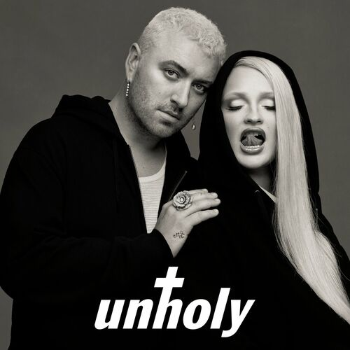

Unholy
Sam smith
Kim Petras
Home

-
Mummy don't know daddy's getting hot
At the body shop, doing something unholy
He lucky, lucky, yeah (ooh)
He lucky, lucky, yeah (ye-yeah)
He lucky, lucky, yeah
He lucky, lucky, yeah
-
A lucky, lucky girl
She got married to a boy like you
She'd kick you out if she ever, ever knew
'Bout all the - you tell me that you do
Dirty, dirty boy
You know everyone is talking on the scene
I hear them whispering 'bout the places that you've been
And how you don't know how to keep your business clean
-
Mummy don't know daddy's getting hot
At the body shop, doing something unholy
He's sat back while she's dropping it, she be popping it
Yeah, she put it down slowly
Oh-ee-oh-ee-oh, he left his kids at
Ho-ee-oh-ee-ome, so he can get that
Mummy don't know daddy's getting hot
At the body shop, doing something unholy (woo)
-
Mmm, daddy, daddy, if you want it, drop the add'y (yuh)
Give me love, give me Fendi, my Balenciaga daddy
You gon' need to bag it up, 'cause I'm spending on Rodeo (woo)
You can watch me back it up, I'll be gone in the a.m
And he, he get me Prada, get me Miu Miu like Rihanna (ah)
He always call me 'cause I never cause no drama
And when you want it, baby, I know I got you covered
And when you need it, baby, just jump under the covers
-
Mummy don't know daddy's getting hot
At the body shop, doin' somethin' unholy
He's sat back while she's dropping it, she be popping it
Yeah, she put it down slowly
Oh-ee-oh-ee-oh, he left his kids at
Ho-ee-oh-ee-ome, so he can get that
Mummy don't know daddy's getting hot
At the body shop, doin' something unholy